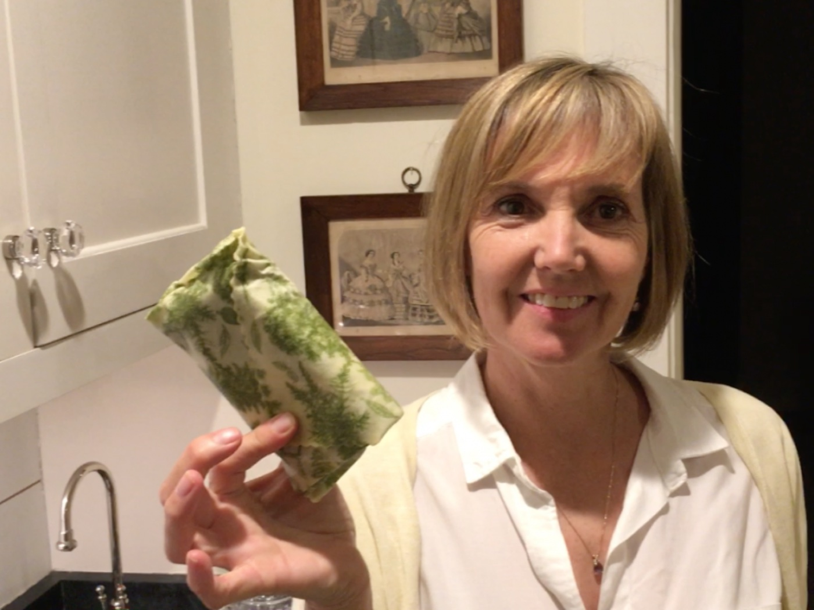

March 29, 2019
So Long Saran Wrap

Learning how to use greener products can take some experimentation. That’s what I found with the beeswax covers sold as replacements for cling wraps and foil. At first contact these beeswax wraps are magical. The feel is soft and bendable—like a silly putty—and there is definitely a satisfaction to the way they actually stick and hold their shape when you press them around a bowl. They come in beautiful assorted colors and patterns—way more pleasing that plain old clear (and oft times unruly) cling wrap. And cling wrap is not only a single use plastic film, unlike other plastic films which can be recycled with plastic grocery bags, the additive that makes cling wrap stretchy also makes it NON recyclable. …..I wanted to LOVE these beeswax covers.
But if the beeswax covers get soiled and need washing, the waxiness wears out. The bright colors fade, and you are left with a somewhat impotent wrap. I tried microwaving to regenerate the wax…but still less effective, and not the bright, colorful waxy beauty of the original.
Here’s a pro tip: try pairing your wax fabric covers with the deli wrap from your cheese or cold cuts (a great opportunity to REUSE). While by themselves the deli wraps don’t stay closed, teamed up with the wax fabric covers they are brilliant. Wrapping your sandwich in the deli wrap keeps the wax cover nice and clean, and that beautiful waxy cover holds the otherwise floppy deli wrap (or wax paper) in place. Voila, a beautiful, green, satisfying waxy wrapped sandwich, and covers that stay clean for infinite uses.